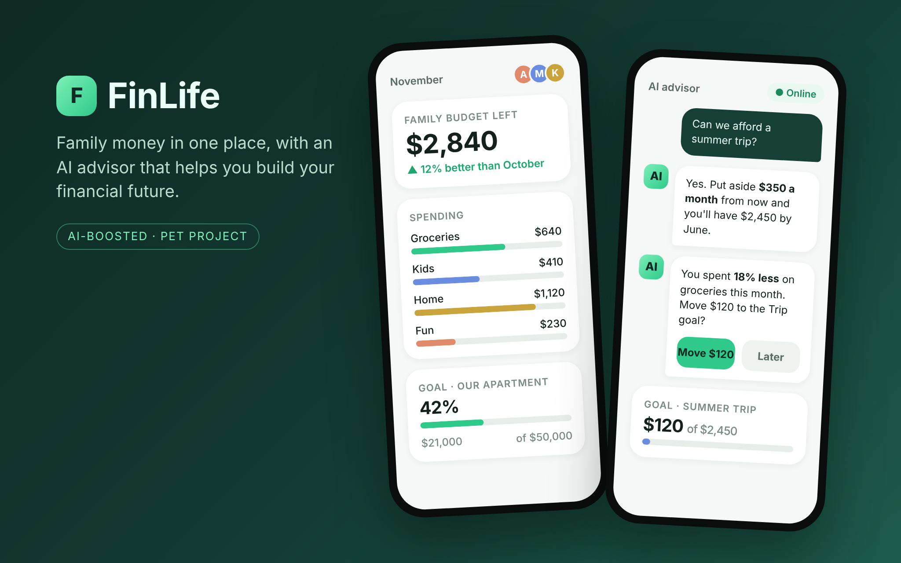

Cases

Campaign launch: from months to days
Tinkoff’s ~10 launch tools merged into one campaign entity. Launch time: 30–70 days → under a week.
View case →

Content Hub: one canvas for every channel
One canvas for creatives of every channel, with a mode for copy editors, designers and technologists. Live; tested with 25 people from three roles.
View case →

Content storage: reuse any creative after launch
Content storage in Touch: creatives and their assets land in the library on publish, tagged by campaign, and show every campaign they run in. Agreed next step for Touch.
View case →
NDFLka: 2.5× more sign-ups from articles
Redesign of an online tax refund service. A low-cost entry service raised the average check, and reworked article pages sent 2.5× more traffic to sign-up.
View on Behance ↗

FinLife
Family finance assistant with an AI advisor: a shared budget, goals, and tips that help a family build its financial future. Pet project.
In progress

Yellow Brush
A kids' app that turns brushing teeth into a game: a buddy to brush with, a guided two-minute routine, and a star for every clean.
In progress